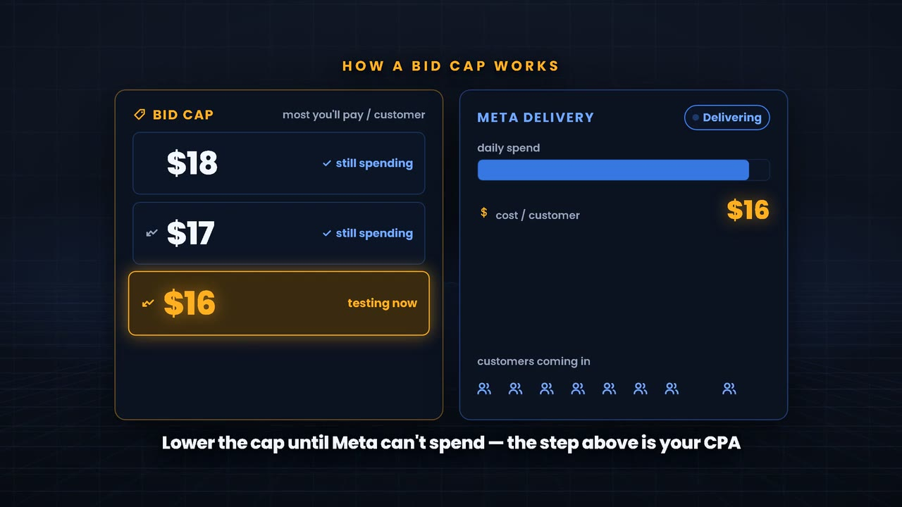
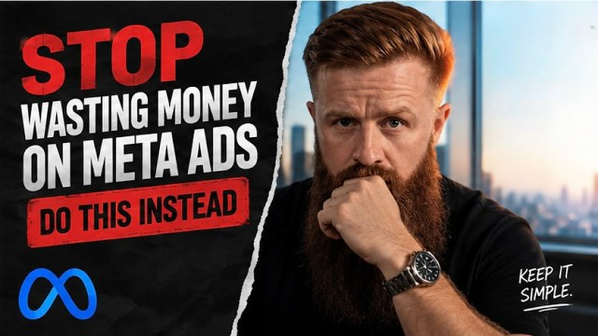
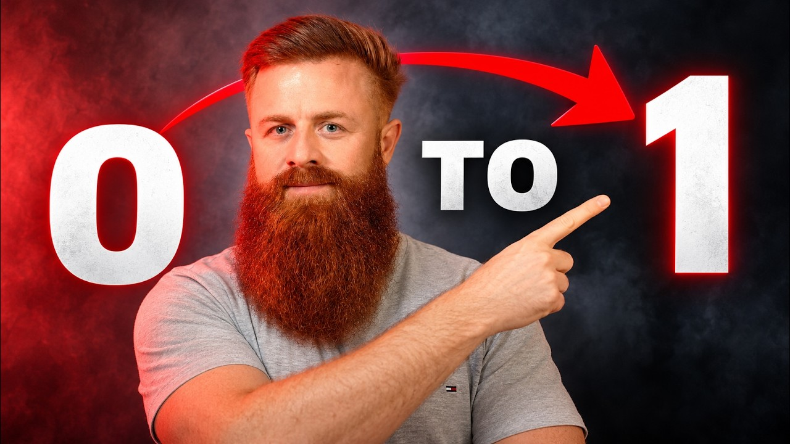
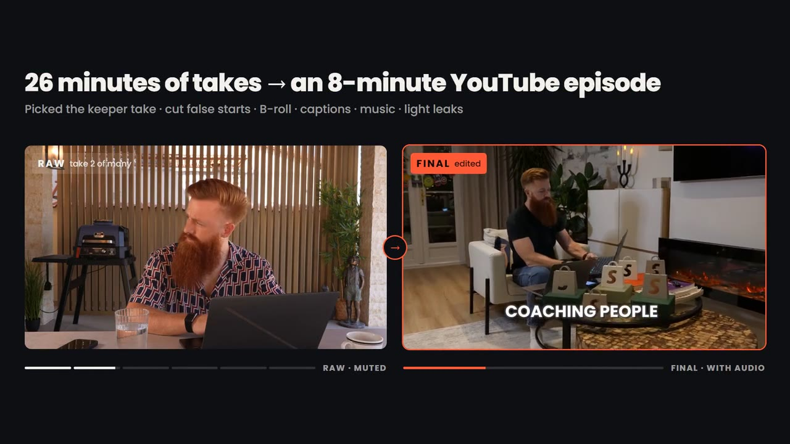
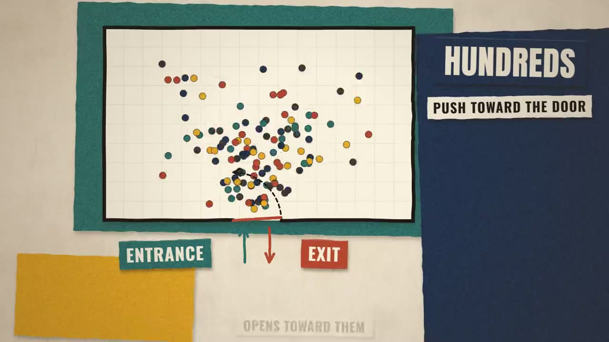
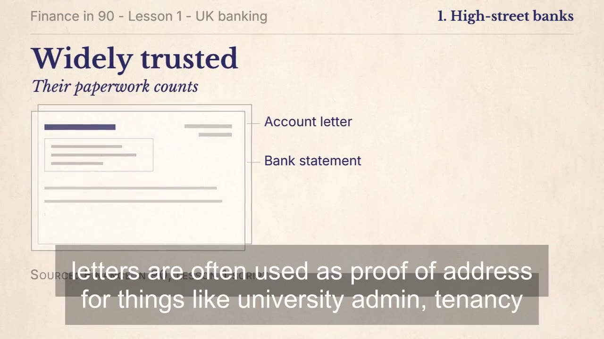
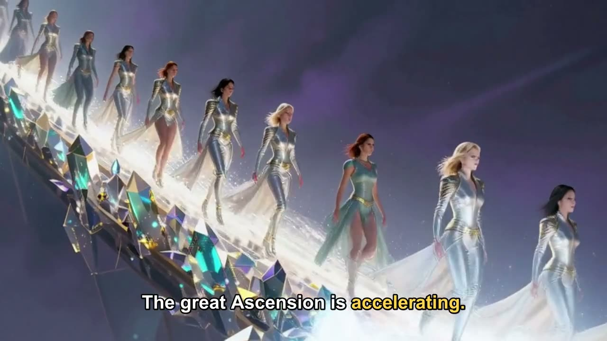
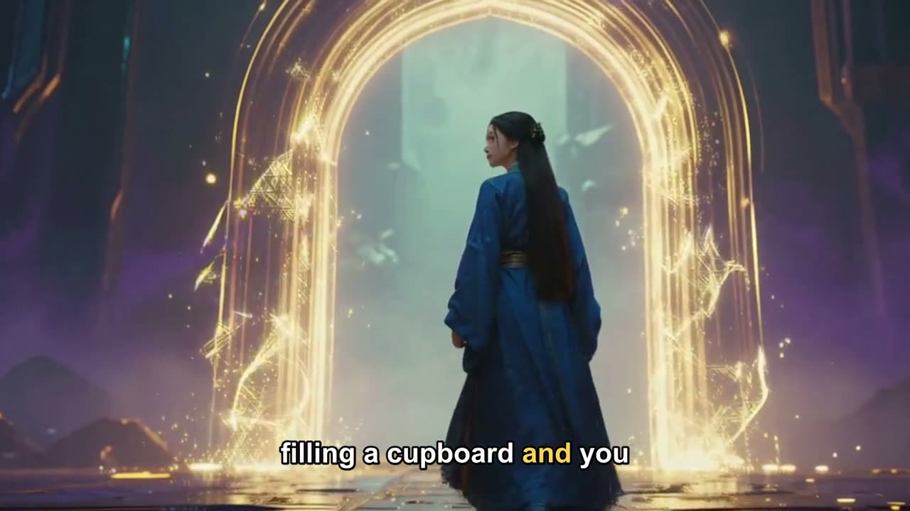

One speaker, one idea at a time, easy to follow and remember.
I edit talking-to-camera lessons: a natural pace that keeps the speaker's personality, key points set beside them, section titles and short visual summaries. Clean audio, consistent colour, your brand throughout.

George CordonGraphics beside the speakerPresenter plus key points
A coach explaining a method to camera. Each graphic carries one idea and lands on the words that say it.
George Cordon, UK business coach, YouTube, 2025 to now. My part: the whole edit (take selection, pacing, audio, colour) and every graphic, title and caption. George films and presents.

George Cordon · YouTubeWhy I Use Bid Caps to Scale My Meta Ads (opens YouTube in a new tab)
George Cordon · YouTubeThis Boring Trick With AI Makes Me 80K/month (opens YouTube in a new tab)
George CordonRaw to final: keeper takes, graphics, captions George CordonRaw to final: two cameras
George CordonRaw to final: two cameras
The first YouTube link opens about three minutes in, at a step-by-step walkthrough.
Lesson explainers
Two lesson styles from October 2026: a paper-collage look for an architecture exam channel and a calm editorial look for a student money course. Section titles, diagrams, checklists and a recap in each.

Own channel · In progressWhy exit doors open outward
Client course · In progressHigh-street banks for new studentsA narrated series that looks the same every week

Faceless channel · AI-generatedA recurring presenter, episode opening
Faceless channel · AI-generatedSame presenter, next episodeThe same lesson style, made for a phone
The three marked In progress are first versions, still in review, so expect small timing and layout fixes. I will swap in the finished cuts as they are approved.
Short clips from each video
For later, when you want social pieces: the moments that stand on their own, reframed to 9:16 with captions people can read on mute.


How I'd handle your seven-minute pilot
Understand it first, then cut, build and check.
Map the ideas
I watch the full recording with the transcript and send you a one-page plan: the sections, the key points to put on screen in the speaker's own words, and where a summary helps. You approve it before I build.
Cut for pace
Stumbles, repeats and long pauses removed, the meaning and personality kept. Voice cleaned and levelled, music kept under the voice, colour matched.
Build the visuals
A small template set from your brand files: key points beside the speaker, section titles, a lower third and a closing summary. Reused every week so each video looks part of the same series.
Check every word
Each on-screen line matched to the transcript, spelling and line breaks checked, then one full watch-through at normal speed before it reaches you.
Pilot delivery
16:9- Video
- Finished 16:9 MP4 for your app, 1080p or 4K
- Project files
- Organised Premiere Pro project with the graphics templates, fonts listed and media linked, ready for updates
- Edit plan
- The one-page idea map, for your sign-off before the build
- Review
- Timecoded notes welcome (Frame.io or a simple list), changes turned around next working day
- Weekly
- Full-time hours, overlapping the UK working day
Tools
- Editing
- Premiere Pro, DaVinci Resolve
- Graphics
- Code-built motion graphics (Remotion, HyperFrames), After Effects, Photoshop, Canva
- AI, with a human check
- Word-level transcripts (Whisper), Adobe Podcast voice clean-up, Claude for mapping ideas from the transcript and checking on-screen text against it
- Workstation
- Ryzen 9 9900X, RTX 4090, 32 GB RAM
Send the recording. The idea map comes first.
Contracts and payments go through Upwork.